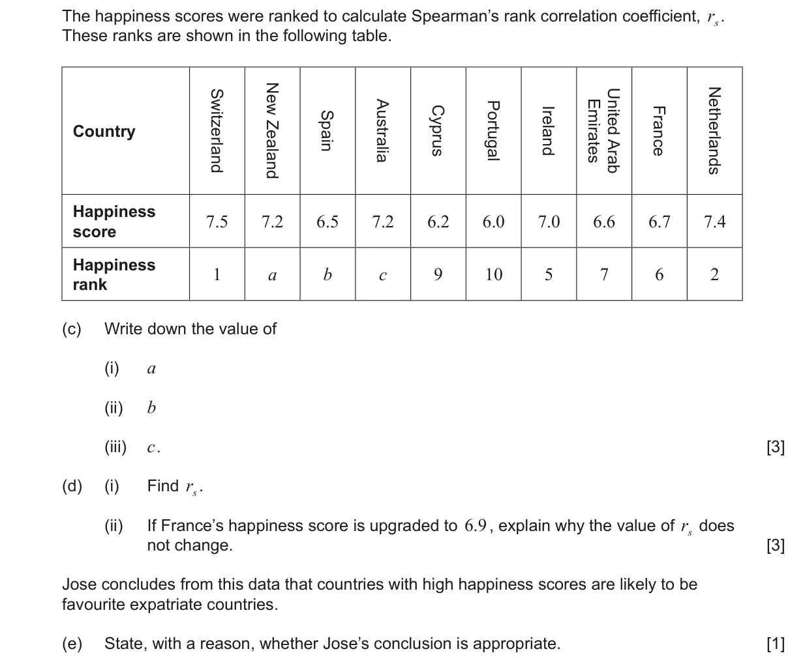
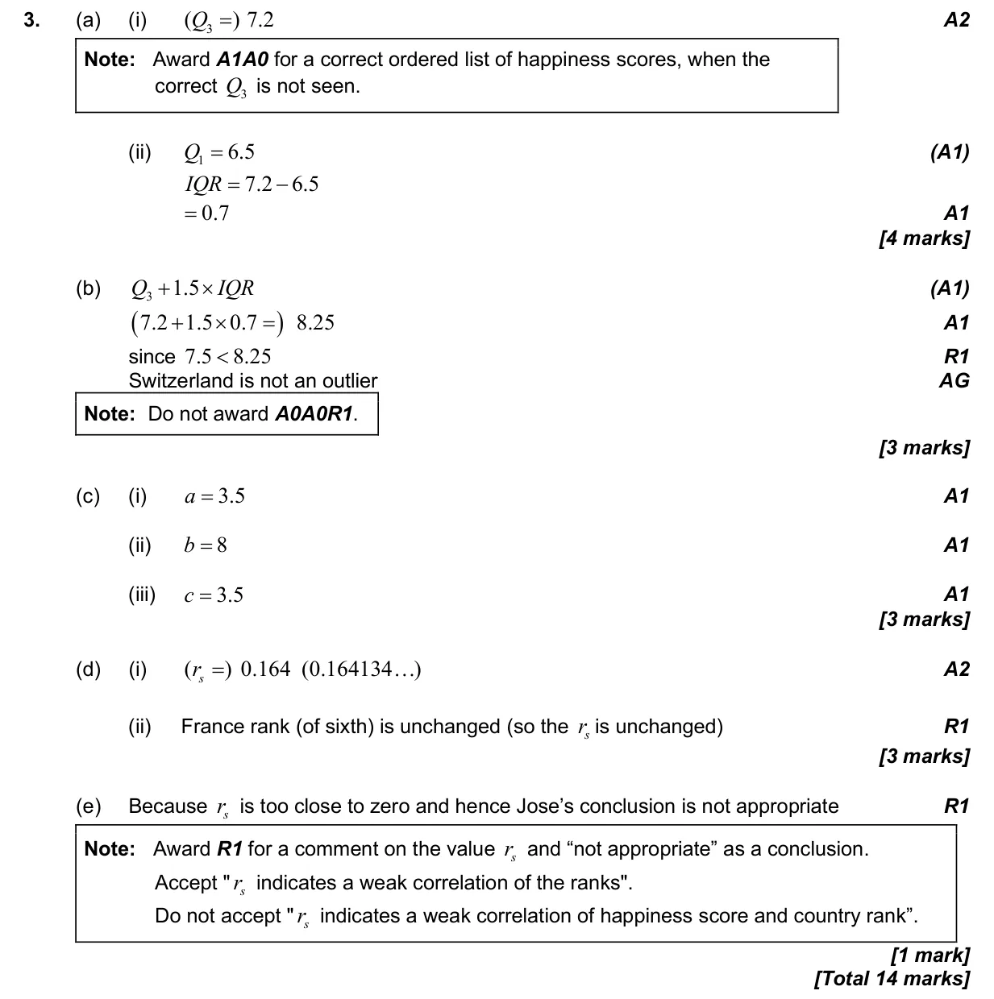

Appears in AI SL P2 Q3AI HL P2 Q1
4.10 Spearman's rank correlation coefficient4.3 Mean, median, mode, grouped mean, standard deviation, quartiles and IQR4.2 Histograms, cumulative frequency graphs and box plots
Question


Markscheme
